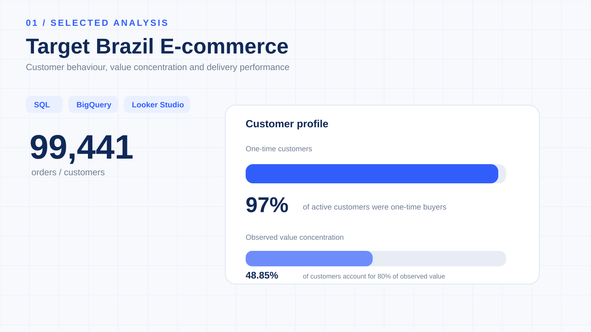

Target Brazil
E-commerce Analytics
An end-to-end customer, order and operational analytics case study using Google BigQuery, GoogleSQL and Looker Studio.

What is happening across customers, orders and operations?
Understand the data before writing the query.
The analysis starts from the relational model and controls analytical grain before customer- or order-level metrics are calculated.
| Table | Rows | Role |
|---|---|---|
| customers | 99,441 | Customer master and geography |
| orders | 99,441 | Core order-level transaction grain |
| order_items | 112,650 | Products and seller-level order lines |
| payments | 103,886 | Payment method, value and installments |
| order_reviews | 99,224 | Customer review information |
| products | 32,951 | Product master |
| sellers | 3,095 | Seller master |
| geolocation | 1,000,163 | Geographic reference |
97% of active customers were one-time buyers.
The customer analysis uses customer_unique_id to identify the underlying customer across potentially multiple customer_id records.
One-time behaviour is not treated as confirmed churn because the dataset has a fixed observation end date.


Value is concentrated — but the pathway differs.
48.85% of customers account for 80% of observed customer value. High-value one-time customers tend to generate value through one high-ticket purchase, while high-value repeat customers reach similar observed value through multiple lower-value purchases.


5,515 recent high-value one-time customers.
Defined using project-specific RFM thresholds: M4 observed customer value > ₹182.40, R4 last purchase within 163 days of 17 October 2018, and F1 exactly one completed order.
Delivery performance connects with the customer experience.
These are observed associations, not causal conclusions. State-level freight/delivery relationships and delivery/review relationships should not be interpreted as proof that one variable causes the other.
From relational data to business insight.
Tools
Google BigQuery · GoogleSQL · Looker Studio · GitHub
Deliverables
SQL phases · ER diagram · analytical views · customer datasets · four-section dashboard · detailed report
Limitations
Observation ends 17 October 2018; one-time behaviour is not confirmed churn; observed customer value is historical transaction value, not predicted CLV or profit.